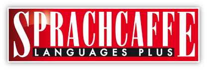

The Sprachcaffe website offers a basic Arabic language profficency test similar to those used by many language schools. Click the link above to go to the test and try it out! It will give you a good measure of where youre at and what you need to work on before you head abroad!
For those going to Morocco, the Peace Corps Moroccan Dialect book provides a great place to start with getting to grips with Darija! Click on the image above to access a free pdf of this book and get started! (This is quite a big file so it may take a few minutes to load)
Hans Wehr is a huge part of any Arabic learner's life, but we all know it's a pain to carry around! Click the Hans Wehr cover above to access an online version of the infamous dictionary, which allows you to easily search for the three letter root an Arabic word and instantly takes you to the page where this root can be found - much quicker than flicking through the traditional version!